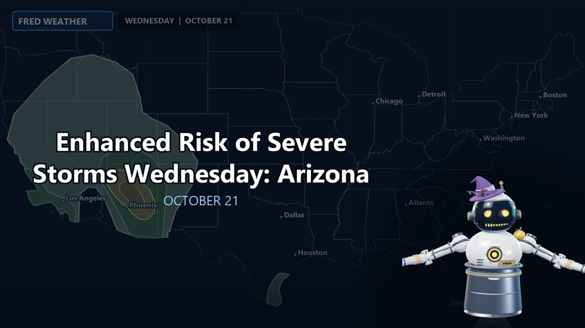
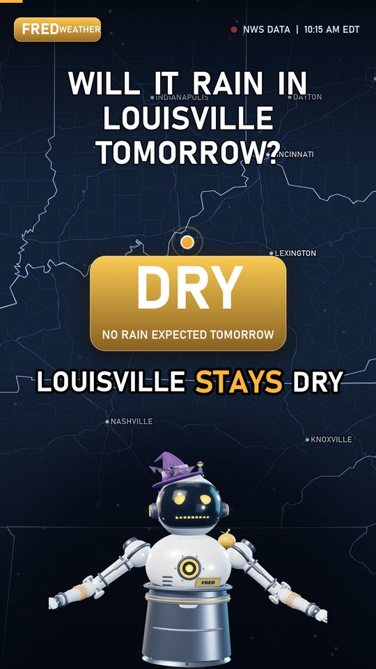

Live severe weather
When storms fire, FRED focuses on the most dangerous warning, explains what it means for the towns in its path, and moves to the next one. Life-threatening alerts interrupt everything else.
Meet FRED
FRED is CellScope's robot weather anchor. Here is a tour of what he does today, on the live stream, in videos and in Shorts.


When storms fire, FRED focuses on the most dangerous warning, explains what it means for the towns in its path, and moves to the next one. Life-threatening alerts interrupt everything else.
FRED reads the day's Storm Prediction Center outlook, active watches and mesoscale discussions, and tells you what they add up to.
Ask in chat and FRED forecasts your town from the latest National Weather Service data. The issue time is on screen, and if the data is not fresh enough he says he cannot do it.
Viewers vote for a town and the winner gets the next forecast. One vote each, and the latest vote counts.
Big outdoor games get a stadium forecast for the hours of play. Ask for your team in chat.
On calm days FRED looks at a live traffic camera, guesses the sky, rain and wind, then checks himself against the official observation. He keeps score, wins and losses included.
Short lessons with original diagrams: what a watch is, how a hurricane is rated, how to read an outlook. Marked clearly as educational, not a forecast.
During an active storm FRED switches to tropical mode: the track, the official watches and warnings, and the places in the path.
FRED reports outages where utilities publish them, and quiet days bring earthquakes, space weather and other weather-adjacent news.
One produced video a day: the outlook for today and tomorrow, the live situation right now and a look back at what happened on this date in history.
Type a question, get a vertical video answer in FRED's voice with a map, the number that matters and a one-line verdict.
A FRED Short
A real Short, start to finish.
Rules FRED lives by
FRED is on the air around the clock on YouTube. Drop a town in chat with !forecast and he will take it.